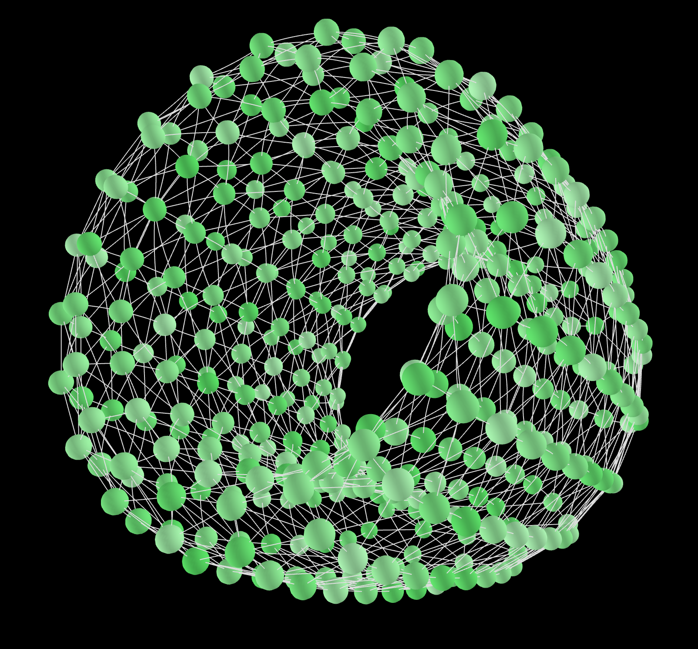

Code
Homophily and Bot Effectiveness
For the chapter on computational sociology, we ran a version of the dissemination of culture model in which we varied levels of homophily. A bot – modeled as a stubborn actor – is less effective in those models, but the relative strength of the strenght-of-weak-bots effect is larger, as the results from our simulation experiment show. You can find the code on my github page.
Strength of Weak Bots
All code to recreate the ‘Strength of Weak Bots’ experiment is available on my github page. The strength-of-weak-bots effect describes the phenomenon that social bots (modeled as stubborn agents) are more effective at propagating a message through social influence when they are less, not more, connected and active.
defSim
discrete event framework for social influence models
Introduction to Agent Based Modeling
 Together with Michael Mäs I set up a short ABM workshop (~3 hours) in which we introduce Agent Based Modeling as a tool for theory building to sociologists. We focus on the differences between social science’s default factor based approach, and ABM’s actor based approach. After a discussion of the motivations behind doing ABM research, we moved to a hands-on exercise about the actor based alternative for explaining the S-curve in diffusion research. We provided the participants with a NetLogo model, and R code for the analysis of a pre-programmed experiment in that model, that illustrates this alternative explanation. Participants were then asked to challenge a model assumption, and code and test their idea.
Together with Michael Mäs I set up a short ABM workshop (~3 hours) in which we introduce Agent Based Modeling as a tool for theory building to sociologists. We focus on the differences between social science’s default factor based approach, and ABM’s actor based approach. After a discussion of the motivations behind doing ABM research, we moved to a hands-on exercise about the actor based alternative for explaining the S-curve in diffusion research. We provided the participants with a NetLogo model, and R code for the analysis of a pre-programmed experiment in that model, that illustrates this alternative explanation. Participants were then asked to challenge a model assumption, and code and test their idea.
3D torus graph in NetLogo
 A while ago I created this code to visualize the commonly used torus network in three dimensions. The model uploaded here does not model any kind of influence function, but it is meant to show how you can generate a 3D representation of the torus network and use NetLogo’s facexyz function to make this presentation dynamic.
- Download the NetLogo model here
- An example of the model can be found on YouTube